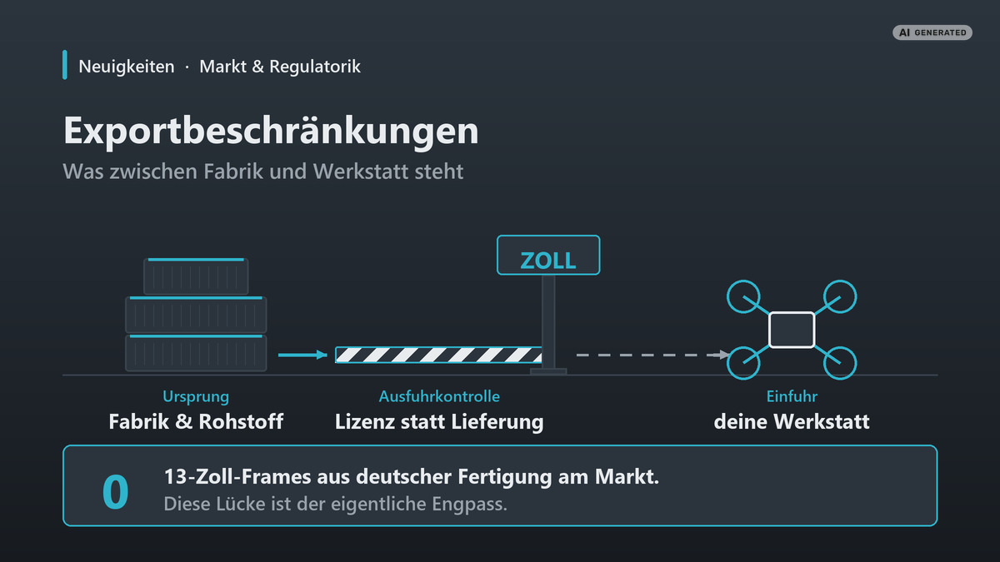

Exportbeschränkungen: Warum dein nächster Frame länger braucht
Am 5. August 2026 hat China die Ausfuhrkontrollen für Drohnen und Drohnenkomponenten in die USA verschärft. Klingt nach einem Thema für Konzernjuristen. Ist es aber nicht. Und bei uns schlägt es nicht dort auf, wo es die meisten vermuten: Motoren gibt es in Europa. Es ist der Rahmen, an dem sich alles entscheidet.
Neuigkeiten · Markt & Regulatorik · Lesezeit ca. 12 Min · Stand: August 2026
Kurz gesagt
- Chinas Handelsministerium hat am 5. August 2026 Drohnen, Schlüsselkomponenten und zugehörige Technologien für Ausfuhren in die USA unter strenge Einzelfallprüfung gestellt. Kein Totalverbot, aber die bisherigen Lizenzerleichterungen fallen weg.
- Die Maßnahme richtet sich formal gegen die USA. Der Unterbau dahinter betrifft aber alle: Chinas Dual-Use-Kontrollliste gilt seit dem 1. Dezember 2024 weltweit, und die Exportkontrollen für Seltene Erden laufen ganz ohne Zielland.
- Unser Engpass sind trotzdem nicht die Motoren. Die gibt es in Europa. Der Engpass ist der Rahmen: Nach unserer Marktrecherche gibt es keinen einzigen 13-Zoll-Frame aus deutscher Fertigung, und für diese Größe existiert auch kein fertiges Open-Source-Design.
- Ein chinesischer Hersteller hat uns mitgeteilt, er fertige keine 13-Zoll-Modelle mehr, Begründung „due to the impact of exports". Ein zweiter liefert unverändert. Also eine Firmenentscheidung, kein Branchenausfall.
- Die EU kontrolliert ihrerseits. Die Güterliste der Dual-Use-Verordnung 2021/821 wurde zuletzt zum 15. November 2025 aktualisiert, dazu kommen die Russland-Sanktionen mit der verpflichtenden No-Russia-Klausel in Exportverträgen.
- Für dich als Käufer heißt das vor allem: längere Lieferzeiten statt leerer Regale, und Preise, die erst beim Zoll ihr wahres Gesicht zeigen. Wichtiger als jeder Einzelpreis ist deshalb, bei den kritischen Bauteilen nicht auf eine einzige Bezugsquelle angewiesen zu sein.

Warum wir diesen Artikel schreiben
Ehrlich gesagt nicht, weil wir eine Meinung zur Weltpolitik loswerden wollen. Sondern weil uns das Thema in der eigenen Werkstatt eingeholt hat, und zwar an einer Stelle, an der wir es nicht erwartet hätten.
Wir bauen Long-Range- und Heavy-Lift-Copter ab 13 Zoll. Als wir angefangen haben, für diese Klasse eine belastbare Bezugsquellen-Liste aufzubauen, sind wir bei jeder Komponente irgendwann fündig geworden. Motoren: Es gibt europäische Hersteller mit ordentlichen Katalogen, mit einem davon arbeiten wir in der Beratung. Akkus, Funkstrecken, Videotechnik: alles über EU-Händler beschaffbar, wenn man bereit ist, den Preis dafür zu zahlen.
Bei einem einzigen Bauteil sind wir gegen eine Wand gelaufen, und zwar gegen eine sehr harte: beim Rahmen.
Der Frame ist das eigentliche Nadelöhr
Unsere Marktrecherche vom Juli 2026 kam zu einem ernüchternden Ergebnis: Am Markt gibt es keinen einzigen 13-Zoll-plus-Frame aus deutscher Fertigung. Für diese Größe existiert nicht einmal ein fertiges Open-Source-Design, an dem man sich abarbeiten könnte. Für 5 und 7 Zoll gibt es die TBS Source One und ihre Ableger, sauber dokumentiert, DXF frei verfügbar. Ab 13 Zoll: nichts.
Was es gibt, ist der Weg nach China. Und da muss man zwei Preisebenen sauber auseinanderhalten, weil sie ständig durcheinandergeworfen werden.
Die Ladenebene. Fertige 13-Zoll-Frames gibt es zu kaufen, und sie sind nicht geschenkt: Ein Toruk13-Frame-Kit steht beim Hersteller mit 149,99 US-Dollar in der Liste, das zugehörige BNF-Komplettgerät bei rund 832 Dollar, der 15-Zöller bei rund 850. Wer das über einen EU-Händler bezieht, zahlt dessen Aufschlag, bekommt dafür aber Gewährleistung im eigenen Rechtsraum. Das ist der Preis, den du im Shop siehst.
Die Fabrikebene. Wer selbst Hersteller sein will, redet mit Carbon-Fabriken statt mit Shops. Dort liegen 13- und 15-Zoll-Frames nach unserer Recherche bei etwa 18 bis 21 US-Dollar ab einer Mindestabnahme von zwei Stück, als White-Label-Ware ohne eigenes Design. Plus Import, plus Qualitätsrisiko, plus die Tatsache, dass einem das Design nicht gehört. Das ist die Zahl, an der sich europäische Fertigung messen lassen muss, und sie hat mit dem Ladenpreis nichts zu tun.
Beide Ebenen haben denselben Haken: Sie hängen an einer Route.
Und selbst beim Rohmaterial in Europa wird es eng, sobald man konkrete Maße braucht. Gemeint sind die Carbonrohre und -platten, aus denen ein Frame erst durch Zuschnitt und Fräsen entsteht. Wir haben für die Arme eines 13-Zoll-Aufbaus ein 20-mal-20-Millimeter-Vierkantrohr mit 1,0 Millimeter Wandstärke gesucht. Bei einem etablierten deutschen Frästeile-Anbieter gibt es das Maß nur mit 2 Millimeter Wandstärke: für diese Auslegung schlicht zu dick. Bei einem zweiten fängt die Lagerware erst bei 30 mal 30 an, dort mit 2,5 Millimetern, und lag preislich deutlich über dem, was vergleichbare Ware kostet. Fündig geworden sind wir am Ende bei einem deutschen Carbonhersteller, zu einem fairen Preis für ein gutes Rohr. Nur eben nach einer Suche, die wir für ein solches Maß nicht erwartet hätten.
Ein Hersteller steigt aus, ein anderer liefert weiter
Wie das im Alltag aussieht, haben wir während der Arbeit an diesem Artikel erlebt. Auf eine Händleranfrage bei einem chinesischen Hersteller kam die Antwort, man fertige derzeit keine 13-Zoll-Modelle mehr, das Programm umfasse nur noch 5 Zoll und kleiner. Als Begründung ein kurzer Halbsatz: „due to the impact of exports".
Wir haben das am selben Tag bei einem zweiten Hersteller gegengeprüft. Dort läuft alles normal weiter: 13 und 15 Zoll als lagernd gelistet, kein Auslauf-Hinweis, und über einen Händler in Tschechien auch innerhalb der EU beziehbar. Die Schlussfolgerung ist deshalb nicht „China liefert keine 13 Zoll mehr", sondern schlicht: eine Firmenentscheidung, kein Branchenausfall.
Für uns bleibt es trotzdem lehrreich, und zwar unaufgeregt. Wer bei einem Bauteil nur zwei ernsthafte Optionen hat, für den ist der Wegfall einer Option keine Delle, sondern die Hälfte. Beim Frame ist das im Kern nicht einmal Exportrecht, sondern eine Lücke im europäischen Markt. Aber genau die sorgt dafür, dass Exportthemen bei uns sofort durchschlagen.
Der Shop-Preis ist nicht der Endpreis
Der zweite Moment kam bei einer ganz normalen Akkurecherche: passende 6S-Packs für unsere 13- und 15-Zoll-Teilelisten zusammenstellen. Zwei der technisch besten Kandidaten waren zum Recherchezeitpunkt schlicht nicht lieferbar. Nicht „drei Tage Verzögerung". Nicht lieferbar.
Ein dritter Kandidat stand mit 63 Euro in der Liste, umgerechnet aus dem US-Shop des Herstellers. Als wir ehrlich weitergerechnet haben, blieb davon nichts übrig: LiPo-Versand ist Gefahrgut nach UN3480, dazu Zoll und Einfuhrumsatzsteuer. Realistisch landet man bei 90 bis 100 Euro. Wir haben das damals in die Dokumentation geschrieben, mit dem Hinweis „vor Bestellung EU-Händler prüfen".
Einzeln sind das keine Katastrophen, sondern Reibungsverluste. Zusammengenommen zeichnen sie aber ein Muster, und das Muster hat einen Namen. Weil uns Kunden inzwischen regelmäßig fragen, warum ein Teilesatz plötzlich sechs Wochen braucht, haben wir uns die Rechtslage dahinter einmal in Ruhe angesehen.
Was am 5. August 2026 passiert ist
Chinas Handelsministerium, das MOFCOM, hat an diesem Tag ein Bündel von Maßnahmen veröffentlicht: die Bekanntmachungen Nr. 2 und Nr. 3 des Jahres 2026 sowie die Announcement Nr. 34. Sieben US-Einrichtungen wurden gelistet, bestimmte Produktzertifizierungen mit US-Bezug ausgesetzt, und China hat erstmals eine nationale Sicherheitsuntersuchung nach seinem Außenhandelsgesetz eingeleitet.
Der für uns interessante Teil steht in einem einzigen Satz: Ausfuhren von Drohnen, ihren Schlüsselkomponenten und den zugehörigen Technologien in die USA, soweit sie auf Chinas Dual-Use-Kontrollliste stehen, unterliegen künftig einer strengen Einzelfallprüfung und sind von Lizenzerleichterungen ausgeschlossen. Die Maßnahme trat sofort in Kraft.
Wichtig ist, was da nicht steht. Es ist kein Ausfuhrverbot. Es ist auch keine Liste einzelner Bauteile. Es ist die Streichung eines Verfahrensvorteils. Wer bisher über ein vereinfachtes Verfahren exportieren konnte, muss jetzt jeden Vorgang einzeln prüfen lassen. Branchenberichte nennen als betroffene Warengruppen Motoren, Akkus, Funkstrecken, Sensorik, Kameras und Navigationstechnik. Die praktische Folge, so die Einschätzung aus der Branche, sind eher langsamere Lieferungen als plötzliche Knappheit.
Formal richtet sich das alles gegen die USA, nicht gegen Europa. Wer jetzt aufatmet, hat allerdings die falsche Ebene angeschaut.
Der eigentliche Unterbau: die Kontrollliste seit Dezember 2024
Am 1. Dezember 2024 sind in China zwei Dinge gleichzeitig in Kraft getreten: eine übergreifende Verordnung zur Exportkontrolle von Dual-Use-Gütern und eine einheitliche Kontrollliste. Damit wurde ein vorher zersplittertes System zusammengeführt. Wer ein gelistetes Gut ausführen will, braucht eine Lizenz des MOFCOM. Punkt. Unabhängig davon, wohin.
Das ist der Rahmen, in dem die August-Maßnahme überhaupt erst funktioniert. Die Liste existiert längst, die Lizenzpflicht existiert längst. Verschärft wurde nur die Behandlung eines bestimmten Ziellandes. Und das bedeutet umgekehrt: Der Hebel, um dasselbe mit einem anderen Zielland zu tun, liegt griffbereit. Er müsste nur betätigt werden.
Das ist keine Prognose, und wir haben auch keinerlei Anhaltspunkte dafür, dass die EU als nächstes dran wäre. Es ist eine schlichte Beschreibung der Architektur. Wer eine Lieferkette plant, die über Jahre halten soll, sollte diese Architektur kennen.
Der Punkt, an dem es wirklich jeden trifft: Magnete
Weiter oben steht, dass Motoren für uns kein Beschaffungsproblem sind. Das stimmt, und zwar auf der Handelsebene: Es gibt europäische Hersteller mit Katalog und Ansprechpartner, und wir sind mit ihnen im Austausch. Eine Ebene tiefer sieht die Sache anders aus, und diesen Teil wollen wir nicht unterschlagen, nur weil er unsere eigene Geschichte komplizierter macht.
In jedem Brushless-Motor, den du je in der Hand hattest, stecken Permanentmagnete. In unserem Motoren-Ratgeber erklären wir, warum die Magnetqualität mit darüber entscheidet, wie viel Gramm Schub du pro Watt bekommst. Was wir dort nicht erklärt haben: wo diese Magnete herkommen.
Die Antwort ist unbequem: Rund 94 Prozent der weltweiten Produktion gesinterter Permanentmagnete entfallen auf China. Für die EU fällt die Zahl noch deutlicher aus: Sie bezieht nach Angaben des Europäischen Parlaments 98 Prozent ihrer Seltene-Erden-Magnete aus China. Bei einer solchen Konzentration hat jede Störung Wirkung, unabhängig davon, wo der Motor am Ende zusammengebaut wird.
China hat 2025 in zwei Wellen Exportkontrollen auf Seltene Erden und die zugehörige Verarbeitungstechnik eingeführt. Die erste vom 4. April machte sieben schwere Seltene Erden samt der zugehörigen Verbindungen, Metalle und Magnete lizenzpflichtig. Die zweite vom 9. Oktober nahm fünf weitere Elemente, dazugehörige Produkte, Anlagen und Technologien hinzu und griff erstmals über die eigene Landesgrenze hinaus: Auch ein im Ausland gefertigter Magnet braucht danach eine Genehmigung, sobald er chinesische Seltene Erden in Spuren ab 0,1 Prozent enthält oder mit chinesischer Abbau-, Verarbeitungs- oder Magnettechnik hergestellt wurde. Diese zweite Welle ist bis zum 10. November 2026 ausgesetzt. „Ausgesetzt" ist dabei das entscheidende Wort: aufgehoben ist etwas anderes.
Wie sich das auswirken kann, hat man 2025 gesehen: Die Preise für Seltene Erden in der EU lagen nach den Beschränkungen zeitweise beim Sechsfachen, und im Automobilsektor kam es zu Verzögerungen bis hin zu Produktionsstopps; der europäische Zuliefererverband CLEPA meldete stillstehende Montagelinien. Für die Drohnenbranche liegt der Hebel an derselben Stelle, nur ist sie zu klein, um in solchen Meldungen überhaupt vorzukommen.
Ein Motor kann in Europa gewickelt, montiert und geprüft sein und beim Rohstoff trotzdem an derselben Quelle hängen wie ein Motor aus Shenzhen. Eine Untersuchung entlang europäischer Lieferketten kam zu dem Ergebnis, dass mehr als 81 Prozent der befragten Unternehmen auf den unteren Stufen mit chinesisch geprägten Magnet-Lieferketten verbunden sind. Vielen ist das im eigenen Einkauf gar nicht bewusst.
Wir schreiben das bewusst so deutlich, weil „Made in Europe" auf einem Motorenkarton eine Aussage über den Montageort ist, nicht über die Rohstoffbasis. Wer das eine für das andere hält, hat sein Risiko nicht reduziert, sondern nur aus dem Blickfeld geschoben.
Die andere Richtung: was die EU kontrolliert
Exportkontrolle ist keine Einbahnstraße. Was wir aus Europa hinausschicken, ist ebenfalls reguliert, und dieser Teil betrifft jeden, der Teile verkauft, verschickt oder auch nur ins Ausland zurücksendet.
Das Grundgerüst ist die EU-Dual-Use-Verordnung 2021/821. Alles, was in ihrem Anhang I gelistet ist, braucht für die Ausfuhr aus der EU eine Genehmigung. Diese Güterliste wird laufend fortgeschrieben: Die Delegierte Verordnung (EU) 2025/2003 wurde am 8. September 2025 erlassen, am 14. November 2025 im Amtsblatt veröffentlicht und trat einen Tag später in Kraft, eine Berichtigung folgte am 9. Februar 2026 im Amtsblatt. Zuständig für Genehmigungen ist in Deutschland das BAFA.
Unbemannte Luftfahrzeuge stehen in Kategorie 9 der Güterliste, unter der Nummer 9A012. Die dort hinterlegten technischen Schwellenwerte ändern sich mit jeder Fortschreibung, und genau deshalb nennen wir sie hier bewusst nicht: Eine Zahl, die wir heute abtippen, kann in sechs Monaten falsch sein und dich in eine Ordnungswidrigkeit laufen lassen. Die maßgebliche Fassung steht beim BAFA, und die ist verlinkt.
Über der Dual-Use-Ebene liegen zwei weitere. Drohnen, die besonders konstruiert oder geändert sind für militärische Zwecke, sind Rüstungsgüter nach dem deutschen Außenwirtschaftsrecht. Bewaffnete Drohnen oder solche, die dazu bestimmt sind, bewaffnet zu werden, fallen unter das Kriegswaffenkontrollgesetz. Das sind unterschiedliche Rechtsregime mit unterschiedlichen Behörden, und der Übergang zwischen ihnen ist fließender, als die meisten annehmen.
Russland-Sanktionen und die No-Russia-Klausel
Seit dem 20. März 2024 verpflichtet Artikel 12g der Verordnung (EU) 833/2014 EU-Ausführer, ihren Vertragspartnern außerhalb der EU die Weiterveräußerung oder Wiederausfuhr bestimmter besonders sensibler Güter nach Russland vertraglich zu untersagen, samt angemessener Abhilfemaßnahmen bei Verstoß. Diese Klausel gehört seither in neue Exportverträge.
Auf den betroffenen Listen stehen unter anderem elektronische Bauteile, Halbleiter, Navigationssysteme und ausdrücklich Drohnentechnologie. Im April 2026 hat die EU zudem erstmals ihr Instrument gegen Sanktionsumgehung aktiviert.
Für einen Kleinbetrieb wie uns ist das kein abstraktes Thema. Sobald man Teile an einen Kunden außerhalb der EU liefert, ist man Ausführer, mit allem, was daran hängt. Das ist einer der Gründe, warum unser Versand aussieht, wie er aussieht.
Was das konkret für dich bedeutet
Jetzt der Teil, für den du eigentlich hier bist. Vier Situationen, in die FPV-Leute regelmäßig geraten.
1. Du bestellst Teile direkt in China
Das bleibt möglich und ist auch nicht verboten. Was sich ändert, ist die Verlässlichkeit. Rechne mit längeren und vor allem schlechter vorhersagbaren Lieferzeiten, besonders bei Motoren, Akkus und allem, was Funk oder Navigation enthält.
Der zweite Punkt ist der, über den wir selbst gestolpert sind: der Preis im Warenkorb ist nicht der Preis. Zoll, Einfuhrumsatzsteuer und bei Akkus der Gefahrgutversand kommen obendrauf. Bei unserer eigenen Akkurecherche wurden aus 63 Euro realistisch 90 bis 100 Euro. Das ist keine Ausnahme, das ist die Regel. Rechne einmal ehrlich durch, bevor du vergleichst, und nicht danach.
Und hier hat sich gerade etwas geändert, das viele noch nicht auf dem Schirm haben: Die 150-Euro-Zollfreigrenze ist zum 1. Juli 2026 weggefallen, Rechtsgrundlage ist die Verordnung (EU) 2026/382. Jede Sendung aus einem Drittland ist seither zollpflichtig, unabhängig vom Warenwert. Für Kleinsendungen greift stattdessen eine Pauschale von 3 Euro je Warenkategorie in der Sendung. Wer also Schrauben, Standoffs und ein Kabel in einer Bestellung zusammenwirft, zahlt nicht einmal 3 Euro, sondern dreimal. Bei den vielen kleinen Positionen, aus denen ein FPV-Build nun einmal besteht, summiert sich das.
Und der Punkt, den man selten liest: Bei einem Direktimport bist du der Importeur. Reklamation, Gewährleistung, Rücksendung, alles läuft über dich und über eine Grenze. Bei einem 20-Euro-Teil ist das egal. Bei einem Motorensatz für 400 Euro nicht mehr.
2. Du verkaufst oder verschickst Teile ins Ausland
Innerhalb der EU ist das im Normalfall unproblematisch. Sobald es über die EU-Außengrenze geht, bist du Ausführer, und zwar auch als Privatperson beim Verkauf über eine Kleinanzeigen-Plattform.
Prüfe zwei Dinge: Steht das Gut auf Anhang I? Und geht es in ein Embargoland oder an eine gelistete Person? Wenn du bei einer dieser Fragen ins Grübeln kommst, ist die Antwort nicht „wird schon passen", sondern eine Anfrage beim BAFA. Das BAFA erteilt auf Basis technischer Unterlagen eine Auskunft, und wer sich innerhalb des geprüften Rahmens bewegt, steht damit auf einer belastbaren Grundlage statt auf einer Vermutung. Das kostet Zeit, aber deutlich weniger als das Gegenteil.
3. Du schickst etwas zur Reparatur zurück
Ein Fall, den fast niemand auf der Rechnung hat, und der uns im Servicegeschäft direkt betrifft. Ein defektes Gerät zur Reparatur außerhalb der EU zu schicken, ist eine Ausfuhr. Es zurückzubekommen, ist eine Einfuhr. Und die reparierte Sache wieder hinauszuschicken, ist erneut eine Ausfuhr.
Für genau diesen Ablauf gibt es die Allgemeine Ausfuhrgenehmigung der Union EU003 für Wiederausfuhren nach Instandsetzung oder Austausch. Sie ist an Bedingungen geknüpft, unter anderem an eine Registrierung beim BAFA, und sie gilt nicht für jedes Gut und nicht für jedes Zielland. Wer regelmäßig Geräte über die Außengrenze zur Reparatur schickt, sollte sich das einmal ordentlich ansehen, statt es jedes Mal neu zu improvisieren.
4. Du verkaufst gebrauchte Teile weiter
Gebraucht ist exportrechtlich nicht privilegiert. Ein gelistetes Gut bleibt ein gelistetes Gut, auch nach zwei Jahren im Einsatz und mit Kratzern im Gehäuse. Der Verkauf eines gebrauchten Systems ins Nicht-EU-Ausland unterliegt denselben Regeln wie der Verkauf eines neuen.
Die ehrliche Einordnung
Für den ganz normalen Hobbyflug in Deutschland ändert sich durch all das nichts. Du brauchst keine Ausfuhrgenehmigung, um deinen Copter zum Fliegen zu bringen. Relevant wird das Thema in dem Moment, in dem Ware eine EU-Außengrenze überquert, in eine Richtung oder in die andere. Alles darunter ist Lieferzeit und Preis, nicht Recht.
Was wir dir konkret raten
- Plane Vorlaufzeit statt Lagerbestand. Wer sein Projekt sechs Wochen vorher durchdenkt, ist gegen Lieferzeitschwankungen besser geschützt als jemand, der Teile hortet. Akkus altern im Regal, Regulatorik nicht.
- Rechne den Landed-Preis, nicht den Shop-Preis. Warenwert plus Versand plus Zoll plus Einfuhrumsatzsteuer, bei Akkus plus Gefahrgutzuschlag. Erst diese Zahl ist mit einem EU-Angebot vergleichbar.
- Bau nicht deinen gesamten Copter auf ein einziges Bezugsland. Wenn Frame, Motoren, ESC, FC und Funkstrecke alle aus derselben Quelle kommen, hast du keine fünf Lieferanten, sondern einen.
- Dokumentiere, was du verbaut hast. Hersteller, Typ, Bezugsquelle, Datum. Wenn ein Teil in zwei Jahren nicht mehr beschaffbar ist, ist diese Liste der Unterschied zwischen „Ersatz finden" und „neu konstruieren".
- Bei Ausfuhr im Zweifel fragen. Eine BAFA-Auskunft kostet Zeit und schafft Rechtssicherheit. Eine falsche Annahme kostet mehr.
Wie es weitergeht
Zwei Termine stehen im Kalender. Die Aussetzung der zweiten Welle der chinesischen Seltene-Erden-Kontrollen läuft am 10. November 2026 aus. Und die Güterliste der EU-Dual-Use-Verordnung wird weiter fortgeschrieben, in einem Rhythmus, der eher an Software-Releases erinnert als an klassische Gesetzgebung.
Wir werden diesen Artikel aktualisieren, wenn sich Relevantes ändert, und die Änderungen unten transparent führen. Wenn du eine Frage hast, die hier nicht beantwortet ist, oder wenn du bei einem konkreten Projekt vor genau diesem Beschaffungsproblem stehst: schreib uns. Wir haben die Recherche ohnehin schon gemacht.
Dieser Artikel gibt den Stand vom 14.08.2026 wieder und beruht auf den unten verlinkten Quellen. Er ist eine journalistische Einordnung und keine Rechtsberatung. Exportkontrollrecht ist stark einzelfallabhängig, die Güterlisten ändern sich laufend, und die Einstufung eines konkreten Guts kann nur anhand seiner technischen Daten erfolgen. Verbindliche Auskünfte erteilt das BAFA. Alle Angaben ohne Gewähr.
Quellenangaben
- FuJae Partners: China Imposes Countermeasures on 7 U.S. Entities and Tightens Export Controls on Drone-Related Dual-Use Items (MOFCOM Order No. 2/3 2026, Announcement No. 34)
- Global Times: China tightens export controls on drone-related dual-use items to the US (05.08.2026)
- DroneLife: China Tightens Drone Export Controls, Adding New Pressure to U.S. Supply Chains (05.08.2026)
- NBC News: China announces countermeasures against Washington, including controls on drone exports
- Global Trade Alert: Eintrag zur Maßnahme vom 05.08.2026
- Eversheds Sutherland: Chinas Dual-Use-Exportkontrollverordnung und einheitliche Güterliste, in Kraft 01.12.2024
- Morrison Foerster: China's New Export Control Framework, Key Changes for Dual-Use Items
- Europäisches Parlament (EPRS): China's rare-earth export restrictions (Nov. 2025; Wellen 04.04./09.10.2025, Aussetzung bis 10.11.2026, 98 % EU-Magnetimporte, Preise bis zum Sechsfachen)
- IEA: With new export controls on critical minerals, supply concentration risks become reality
- SPARTANAT: Rare Earths, Magnets, and China's Control (Prewave-Report „Magnetic West": Verflechtung europäischer Lieferketten über die Tier-Stufen)
- S&P Global / CLEPA: Störungen europäischer Lieferketten durch die Seltene-Erden-Kontrollen
- BAFA: Aktualisierung der Anhänge der EU-Dual-Use-Verordnung
- BAFA: Aktualisierung des Anhang I der EU-Dual-Use-Verordnung (27.01.2026)
- BAFA: Güterlisten (maßgebliche Fassung)
- BAFA: Allgemeine Ausfuhrgenehmigung der Union Nr. EU003, Wiederausfuhren nach Instandsetzung oder Austausch
- Zoll online: Dual-Use-Güter
- Zoll online: Wegfall der 150-Euro-Zollfreigrenze zum 01.07.2026 (VO (EU) 2026/382)
- Bundesfinanzministerium: Zollbefreiung für Warensendungen unter 150 Euro entfällt
- CMS: Vom Freizeitobjekt zum Militärgut, Genehmigungserfordernisse für Drohnen (26.02.2026, akt. 08.05.2026)
- Arnold & Porter: EU Sanctions, Ensuring Compliance With the New „No Re-Export to Russia" Clause (Art. 12g VO 833/2014)
- GTAI: EU-Sanktionen gegenüber Russland (Überblick, laufend aktualisiert)
Änderungshistorie
- 15.08.2026 · Hero-Schaubild neu gezeichnet: Container, Zollschranke und Werkstatt statt abstrakter Stationskette
- 14.08.2026 · Erstveröffentlichung in der Rubrik Neuigkeiten: Startseiten-Kachel, sitemap, Cross-Link zum Motoren-Ratgeber